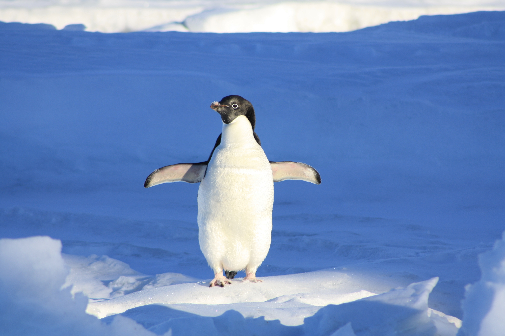
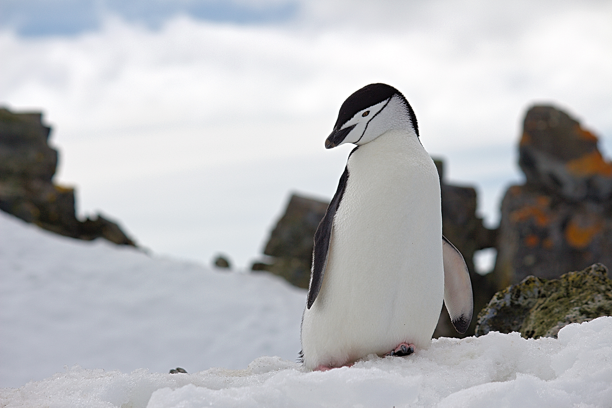
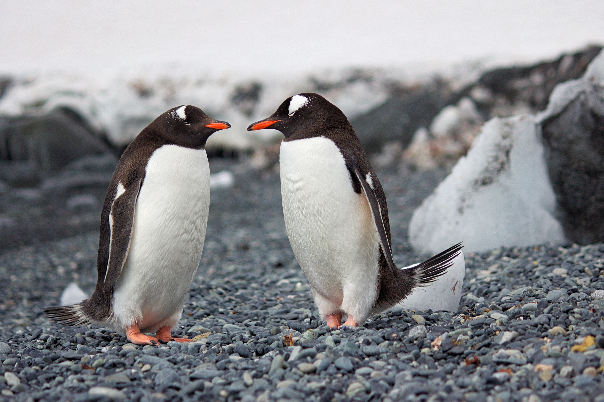
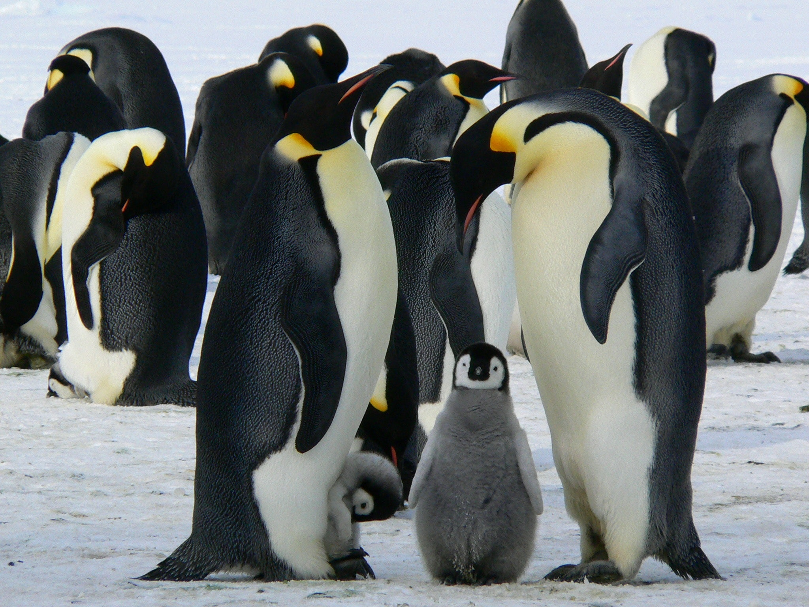
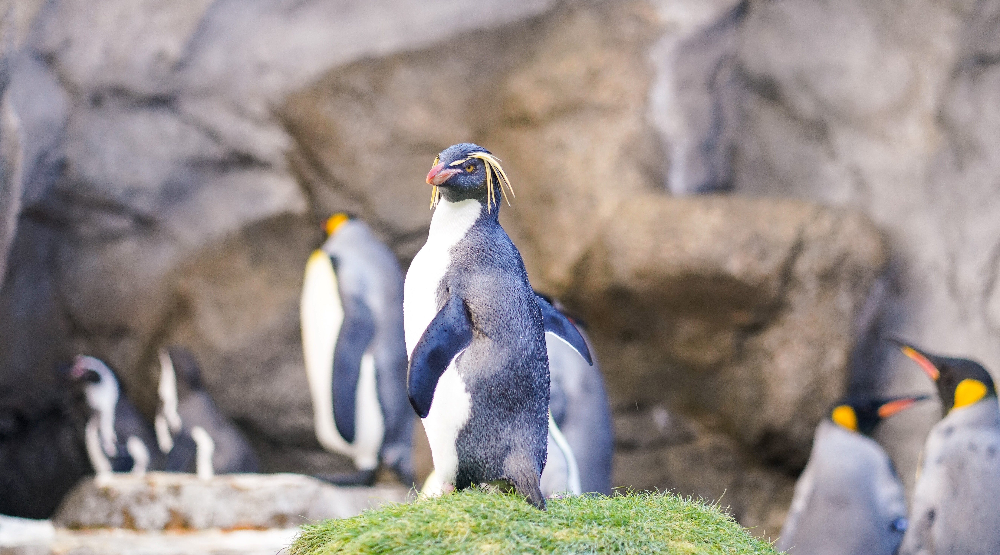
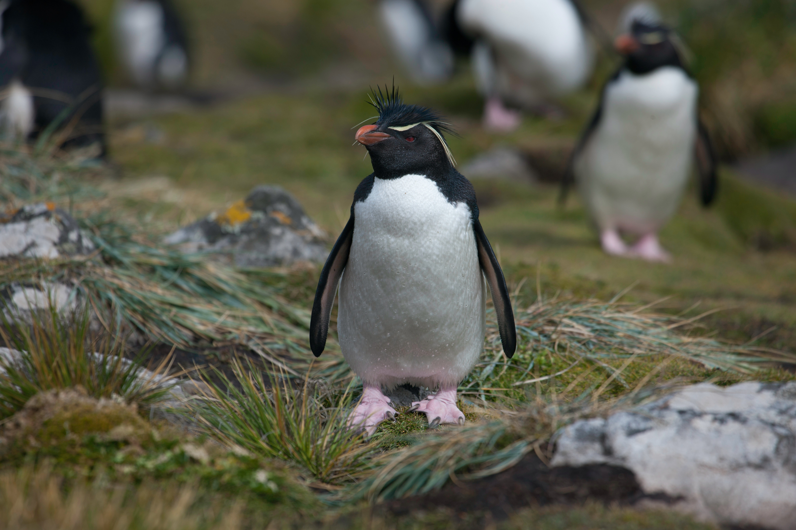

SEVEN TYPES OF PENGUINS
Ze 17 druhů tučňáků, které máme na světě lze v samotné Antarktidě nalézt pouze sedm. Dozvíte se více o tučňácích z Antarktidy! Ovšem tři ze sedmi druhů žije jen na - Antarktidě - po část roku, ale zbylí čtyři tráví celý život na ledovém kontinentu. Zbytek žije na jižní polokouli.

Tučňák Adelie
Tučňáci Adelie tráví zimu v mořích obklopujících Antarktidu a zbytek roku na mnoha malých pobřežních ostrovech. Tučňáci Adelie jsou mnohem snadněji rozeznatelní od jara do podzimu - během zimy tráví většinu času ve vodě podél pobřeží.

Tučňák uzdičkový
Pokud si představíte, že znaky na hlavě těchto tučňáků jsou malinká helma, pochopíte jejich jméno. Mají malý proužek černého peří, který se táhne od černých značek na temeni hlavy, přes bílou spodní stranu brady a zase nahoru.

Tučňák oslí
Jsou nejrychlejší ze světa tučňáků. I když to nejsou silní běžci, mohou startovat ve vodě: při potápění je známo, že dosahují rychlosti až 22 mil za hodinu. Většinu dne tráví lovem krilů, olihní a ryb.

Tučňák královský
Tučňáci královští vypadají podobně jako tučňáci císařští, s barevným peřím zdůrazňujícím jejich černobílý vzor. Za zmínku však stojí, že černá barva tučňáka královského není tak tmavá jako u jiných druhů tučňáků a dala by se popsat jako tmavě šedá. Druhým
největším druhem tučňáka je tučňák královský.

Tučňák císařský
Tučňáci císařští jsou největší, nejodvážnější a nejlépe oblečení ze všech druhů tučňáků. Jsou impozantně obrovští, dosahují výšky kolem 1,2 metrů a váží až 22-45 kilogramy. Díky tomu se tyčí nad ostatními tučňáky. Mají také nejmalebnější znaky - kromě
tučňáčího smokingu mají také jasně žluté a oranžové peří na hlavách, krku a hrudi.

Tučňák žlutorohý
Pokud jsou tučňáci císařští a královští nóbl, tučňáci makarónští jsou výstřední. Malí a statní, jejich nejznámějším rysem je jasné, špičaté, oranžové obočí. Tyto obočí podobné znaky (zvané erby) jsou ve světě tučňáků celkem běžné, ale obvykle mají světle
žlutou barvu.

Tučňák skalní
Jsou jedni z nejzdobnějších tučňáků, zdobení žlutým obočím, které se používá k přilákání partnera. Normálně tito ptáci milující led měří 16 až 18 palců a nacházejí se mezi subantarktickými ostrovy. Rychle kroutí hlavou, aby jejich žluté čelo vypadalo
jako svatozář.